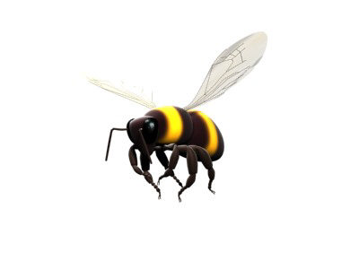

Friday, July the 18th, 2008
back to: title, date or indexes
Hooting Yard has a number of bee monitors who keep us up to speed with various bee doings around the globe. Many thanks, then, to Tristan Shuddery (Bee Monitor No. 56A) for alerting us to this article which tells us about some Japanese bees and their tendency to attack anything dark-coloured that approaches their hives.
